물류관리사-2교시 (2007-08-19 기출문제)
1과목: 보관하역론
1. 다음은 어떤 보관 원칙에 대한 설명인가?
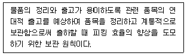
- 회전대응의 원칙
- 선입선출의 원칙
- 통로대면 보관의 원칙
- 위치표시의 원칙
- 네트워크 보관의 원칙
(정답률: 알수없음)

2. 보관에 대한 다음 설명 중 옳지 않은 것은?
- 물품의 생산과 소비의 시간적 간격을 극복하여 시간적 효용을 창출한다.
- 공장에서 대량으로 운송해온 제품을 보관함 으로써 다수의 고객에게 소량 단위의 배송이 가능하게 한다.
- 기업의 경제적 필요에 의해 이루어지는 물류 활동의 한 종류이다.
- 재화의 생산과 소비의 지리적 간격을 극복하는 역할을 한다.
- 물류 활동이 여러 node를 link로 연결하면서 이루어진다고 할 때 보관은 node에서 수행되는 활동이다.
(정답률: 알수없음)
3. 다음 중 포장과 관련된 설명으로 맞지 않는 것은?
- 포장의 궁극적인 목적은 물품을 보호하는 것이다.
- 포장 디자인의 3 요소는 선, 형, 색채이다.
- 포장 설계시 고려할 사항은 하역성, 표시성, 작업성, 경제성, 보호성 등이다.
- 상업포장의 제1차적인 기능은 보호기능이고, 공업포장의 제1차적인 기능은 판매촉진기능이다.
- 수송성은 공업포장의 설계기준이며 크기, 구조, 재료, 형태, 봉합, 색채, 작업성, 경제성 등은 상업포장의 설계기준이다.
(정답률: 알수없음)
4. 다음 중 창고의 분류에 대한 설명으로 틀린 것은 ?
- 유통 창고 : 보관기능과 운송기능을 겸비하며 창고 내에서 유통가공이 이루어진다.
- 제2종 창고 : 냉각설비를 가진 단열 창고로 농축수산물을 섭씨 10 도 이하로 보관한다.
- 기계화 창고 : 랙 시설을 갖추고 지게차 및 크레인 또는 컨베이어 등에 의해 시스템화 된 창고이다.
- 자가 창고 : 제조업자나 유통업자가 자기 책 임하에 물품을 보관하는 창고이다.
- 영업 창고 : 외부의 전문 창고업자로부터 임차하여 물품을 보관하는 창고이다.
(정답률: 알수없음)
5. 다음의 자동화창고에 대한 설명 중 올바르지 않은 것은 어느 것인가 ?
- 피킹설비 및 운반기기를 자동화하고 컴퓨터 제어방식을 통해 입출고 작업의 효율성 제고효과와 인력 절감 효과를 거둘 수 있다.
- 물품의 보관에 있어서는 free location 방식 을 채택하여 보관능력을 향상시킨다.
- 자동화창고는 물품의 흐름보다는 보관에 중점을 두어 설계되어야 한다.
- 자동화창고에서 처리할 물품들은 치수와 포장, 중량 등을 기준으로 단위화가 선행되어야 한다.
- 적은 투자로 기존 건물을 개조하고 랙을 설치하여 제한적인 자동창고의 효과를 볼 수도 있다.
(정답률: 알수없음)
6. 철도역에서 이루어지는 하역방식 중 다음 그림과 같은 하역방식을 무엇이라 하는가?
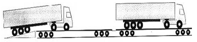
- 피기 백 방식(Piggy Back System)
- 캥거루 방식
- 프레이트 라이너(Freight Liner) 방식
- 크레인에 의한 방식
- 플랙시 밴(Flexi-Van) 방식
(정답률: 알수없음)
7. 다음 중 하역에 대한 설명으로 옳지 않은 것은?
- 하역은 각종 운반수단에 화물을 싣고 내리는 것과 보관화물을 창고 내에서 운반하고 쌓아두고, 꺼내고, 나누고, 상품구색을 갖추는 등의 작업 및 이에 부수하는 제반 작업을 총칭한다.
- 하역은 생산에서 소비에 이르는 전 유통과정의 효용창출에 직접적인 영향을 미치므로 하역 합리화는 물류합리화와 관련성이 크다.
- 하역은 화물의 상ㆍ하차 작업, 운송기관 상호 간의 중계 작업, 창고의 입출고 작업 등 그 범위가 매우 넓다.
- 협의의 하역은 사내하역만을 의미하나, 광의의 의미로는 수출품 및 수입품 선적을 위한 항만하역까지도 포함한다.
- 하역은 시간적 효용과 거리적 효용을 모두 창출하기 때문에 중요성이 날로 증대되고 있다.
(정답률: 알수없음)
8. 물류센터에서 자동분류시스템을 도입하는 목적으로 가장 적합하지 않은 것은?
- 유연성의 향상
- 생산성의 향상
- 분류시간의 단축
- 분류오류의 감소
- 고객서비스의 향상
(정답률: 알수없음)
9. 갑회사의 5 월 중 자재에 관한 거래 내역은 다음과 같다. 선입선출(FIFO) 방법으로 5 월에 출고한 자재의 재료비를 구하면 얼마인가?
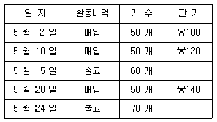
- ￦18,000
- ￦15,200
- ￦ 9,000
- ￦ 7,600
- ￦ 6,000
(정답률: 알수없음)
10. 재고관리와 관련된 자료는 아래와 같다. 서비스율을 95%로 할 경우에 재주문점(ROP)으로 가장 근사한 값은 얼마인가?
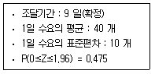
- 419
- 443
- 489
- 469
- 476
(정답률: 알수없음)
11. 갑이라는 회사에서는 A라는 상품의 재고를 정량발주법으로 관리하고 있다. 이 상품에 대한 연간 수요량이 400개, 구매가격은 단위당 10,000원, 연간 단위당 재고유지비는 구매가격의 10%이고, 1회 주문비용은 8,000원이다. 단, 1년은 365일로 한다. 이 경우에 주문주기는?
- 33 일
- 50 일
- 73 일
- 80 일
- 93 일
(정답률: 알수없음)
12. 보관설비에 대한 다음 설명 중 틀린 것은?
- 평치보관은 특별한 자동화 설비가 필요없다는 장점을 가지고 있으나, 공간 활용률이 낮아진다는 단점도 가지고 있다.
- 보관 물품의 선입선출을 위하여 플로우 랙(flow-through rack)을 운용할 수 있다.
- 타이어, 유리 등과 같이 형태가 특수한 물품이나 조심스럽게 다루어야 하는 물품은 캔티레버 랙(cantilever rack)에 보관하여야 한다.
- 창고내의 공간 활용도를 높이기 위하여 모바일 랙(mobile rack)을 사용하는 것이 유리하다.
- 상품을 대량으로 취급하는 경우 건물의 층고에 여유가 있으면 하이스택 랙(high-stack rack)을 설치하는 것이 바람직하다.
(정답률: 알수없음)
13. 창고관리시스템(WMS)에 대해 잘못 설명한 것은?
- WMS를 활용하면 재고 정확도, 공간/설비 활용도가 높아진다.
- WMS를 활용하면 서류/전표 작업, 직간접 인건비는 증가하지만 제품 피킹 시간, 제품 망실, 설비비용 등은 감소한다.
- WMS 패키지(package)를 도입하려면 세부 기능분석이 반드시 필요하다.
- 물류센터의 대형화, 중앙집중화, 부가가치 기능 강화의 추세에 따라 WMS가 유통중심형 물류센터를 위한 차별화 전략의 핵심 요인으로 등장했다.
- 고객의 다양한 요구사항 때문에 WMS 패키지 시장의 성장은 예상보다 저조하나 ERP 패키지의 도입이 활발해지면서, 그 하위 시스템으로서 도입이 확대되고 있다.
(정답률: 알수없음)
14. 배송센터 계획 시 고려해야 할 사항에 해당하지 않는 것은?
- 배송센터의 목표는 고객주문 충족률을 일정 수준 이상으로 유지하는 것이다.
- 교통사정을 검토하여 입지를 선정하여야 한다.
- 취급 상품의 특성이 생산입지형과 소비입지형 중 어느 쪽이냐를 고려하여 입지를 결정하여야 한다.
- 종업원의 지속적 충원이 가능한가를 고려하여 입지를 결정하여야 한다.
- 제조공장에 근접하도록 입지를 결정하여 수송비를 최소화하여야 한다.
(정답률: 알수없음)
15. 다음 화물의 상태 중 운반활성지수가 가장 낮은 것은?
- 대차 위에 놓여 있을 때
- 컨베이어 위에 놓여 있을 때
- 상자 속에 들어 있을 때
- 파렛트 위에 놓여 있을 때
- 바닥에 낱개 상태로 놓여 있을 때
(정답률: 알수없음)
16. 다음은 무엇에 관한 설명인가?
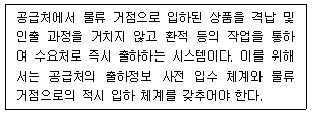
- 직접선적(Direct Shipment)
- 창고 자동화(Warehouse Automation)
- 크로스 도킹(Cross Docking)
- 판매시점관리(Point-of-Sale Management)
- EDI(Electronic Data Interchange)
(정답률: 알수없음)
17. 전통적 구매방식과 JIT 구매방식을 비교하여 설명한 것 중 올바르지 않은 것은?
- 전통적 구매방식에서는 단기적 거래에서 장기적 거래까지 거래 지속기간의 변동이 크지만, JIT 구매방식에서는 공급 업체와 지속적 파트너십을 형성함으로써 장기적 계약관계를 유지한다.
- 전통적 구매방식은 대 로트 생산에 적합하며, JIT 구매방식은 소 로트 생산에 적합하다.
- 공급자의 지역별 분포를 기준으로 볼 때, 전통적 구매방식은 광범위한 지역에 분산되어 있어도 무방하나, JIT 구매 방식에선 가능한 한 근거리 지역에 집중되어 있어야 유리하다.
- 전통적 구매방식에서는 대형화된 창고가 필요하나, JIT 구매방식에서는 가변적인 규모의 소형 창고가 유용하다.
- 전통적 구매방식에서는 무검사 체계를 지향하나, JIT 구매방식에서는 철저한 수입검사 체계를 구축하고 있다.
(정답률: 알수없음)
18. 다음 중 파렛트의 장점으로 가장 적절하지 않은 것은?
- 물류비의 절감
- 하역시간의 단축
- 하역작업의 효율화
- 장척ㆍ중량 화물에 적합
- 재고조사의 편의성 향상
(정답률: 알수없음)
19. 물류표준설비 인증제도에 관한 설명으로 적합하지 않은 것은?
- 물류표준설비 인증신청 대상은 물류표준설비 공급자, 물류표준설비 사용자로 한다.
- 물류표준설비 인증제도는 물류표준의 보급ㆍ확산을 도모하고, 이를 통하여 기업 및 국가물류비를 절감하여 산업 경쟁력 향상에 기여하고자 함을 목적으로 한다.
- 물류표준설비 인증을 받고자 하는 자는 물류 표준설비 성능 검사신청서에 검사시료를 첨부하여 성능 검사기관장에게 신청하여야 한다.
- 물류표준설비 인증 대상품목은 물류설비 중에서 산업자원부 기술표준원장이 정하여 고시하는 인증규격의 해당 품목으로 한다.
- 물류표준설비 인증이라 함은 물류설비가 인증규격 및 인증기준에 적합한지에 대하여 확인하는 행위를 말한다.
(정답률: 알수없음)
20. 경제적인 이용을 위하여 다음 a, b, c, d에 적합한 창고형태를 올바른 순서로 제시한 것은?
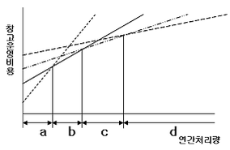
- 리스창고 - 자가자동창고 - 자가창고 - 영업창고
- 영업창고 - 자가창고 - 자가자동창고 - 리스창고
- 영업창고 - 자가자동창고 - 자가창고 - 리스창고
- 자가자동창고 - 자가창고 - 리스창고 - 영업창고
- 영업창고 - 리스창고 - 자가창고 - 자가자동창고
(정답률: 알수없음)
21. 다음은 재고관리의 효율성을 측정하기 위한 지표들이다. 올바르지 않은 것은?
- 서비스율 = 납기내 납품량(금액)/수주량(금액)
- 백오더(Back Order)율 = 결품량/요구량
- 재고회전율 = (일정기간의)매출액/평균 재고액
- 재고일수 = 일평균 출하량(금액)/현재 재고 수량(금액)
- 평균재고량 = (기초재고량 + 기말재고량)/2
(정답률: 알수없음)
22. 다음 일반화물의 취급주의표지(KSA 1008) 중 쓰러지기 쉬운(unstable) 화물을 표시하는 것은?(오류 신고가 접수된 문제입니다. 반드시 정답과 해설을 확인하시기 바랍니다.)
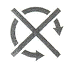
(정답률: 알수없음)
23. 물류거점의 수와 관련된 주요 비용은 재고유 지비용, 수배송비용 및 관리비용 등이다. 이들의 상관관계에 대한 다음 설명 중 틀린 것은?
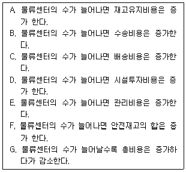
- A와 F
- B와 C
- C와 G
- E와 G
- F와 G
(정답률: 알수없음)
24. 다음은 하역 용어에 대한 설명이다. 가장 잘못된 설명은?
- 상차 및 하차(loading & unloading): 운송기기 등에 화물을 싣고 내리는 것을 말함
- 배닝 및 디배닝(vanning & devanning): 창고 내부 랙에 화물을 올리거나 내리는 것을 말함
- 래싱(lashing): 운송기기에 실려진 화물을 움직이지 않도록 줄로 묶는 작업을 말함
- 더니지(dunnage): 운송기기에 실려진 화물이 손상 또는 파손되지 않도록 화물의 밑바닥이나 틈 사이에 깔거나 끼우는 물건을 말함
- 운반(carrying): 물건을 비교적 단거리로 이동시키는 작업을 말하며, 생산ㆍ유통ㆍ소비 등 어느 경우에도 운반은 수반되며 하역의 일부로 간주함
(정답률: 알수없음)
25. 다음은 지게차용 부속장치(attachment)에 대한 그림이다. 명칭과 주요 용도에 대한 설명이 잘못된 것은?
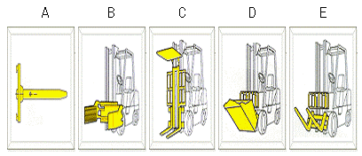
- A는 램(ram)이라 하며 화물의 구멍에 삽입하여 사용하므로 코일, 전선 등의 운반ㆍ하역에 적합한 부속장치이다.
- B는 클램프(clamp)라 하며 화물을 사이에 끼울 수 있도록 되어 있어 드럼과 같은 원통형 화물의 운반ㆍ하역에 적합한 부속장치이다.
- C는 로드 스태빌라이저(load stabilizer)라 하며 포크 위에서 화물을 눌러 움직이지 못하게 하는 부속장치이다.
- D는 버켓(bucket)이라 하며 벌크화물의 하역에 사용하기 위한 부속장치 이다.
- E는 사이드시프터(side shifter)라 하며 핑거 바 등을 가로 방향으로 이동할 수 있는 부속장치이다.
(정답률: 알수없음)
26. 다음은 보관 시스템의 구체적인 작업을 나열한 것이다. 작업의 순서가 바르게 나열된 것은?
- 입하 → 검품 → 오더피킹 → 포장 → 보관 → 출하
- 입하 → 오더피킹 → 검품 → 보관 → 포장 → 출하
- 입하 → 보관 → 오더피킹 → 검품 → 포장 → 출하
- 입하 → 보관 → 오더피킹 → 포장 → 검품 → 출하
- 입하 → 오더피킹 → 보관 → 검품 → 포장 → 출하
(정답률: 알수없음)
27. 아래와 같은 조건의 창고에서 포크리프트는 몇 대가 필요한가?
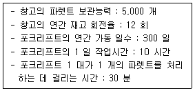
- 10 대
- 12 대
- 15 대
- 20 대
- 25 대
(정답률: 알수없음)
28. 다음은 오더피킹의 방식과 그 내용을 설명한 것이다. 잘못 설명된 것은?
- 존(zone) 피킹 방식: 여러 명의 작업자가 각기 자기가 담당하는 선반의 범위를 정해 두고 해당 범위에 속하는 선반의 물품만을 피킹하는 방식
- 릴레이 방식: 각 보관 장소를 순회하면서 필요한 물품을 피킹하는 방식
- 일괄 오더피킹 방식: 여러 건의 주문전표를 모아서 한 번에 피킹하는 방식
- 총량 피킹 방식: 일정 기간의 주문전표를 한데 모아서 피킹하는 방식
- 1인1건 방식: 1인의 작업자가 1건의 주문전표에서 필요한 물품을 피킹하는 방식
(정답률: 알수없음)
29. 자동차 부품을 생산하는 A 회사는 자동차 회사의 파업으로 1억 원 상당의 부품을 3 개월 동안 납품하지 못하고 보관하고 있었다. 그 동안 보관하는 데 소요된 창고 면적은 100 m2이고 보관비용으로 월 50,000 원/m2을 지출했다. 이 제품의 연간 진부화 비용은 제품가격의 4 %이고 금리 또한 연 4 %이다. 여기에 제시되지 않은 비용은 무시하고 3 개월 동안의 재고유지비를 산출하면 얼마인가?
- 17,000,000 원
- 35,000,000 원
- 25,000,000 원
- 45,000,000 원
- 18,000,000 원
(정답률: 알수없음)
30. 다음 중 길이가 긴 물품의 보관에 가장 적합한 랙(rack)은?(오류 신고가 접수된 문제입니다. 반드시 정답과 해설을 확인하시기 바랍니다.)
- Sliding Rack
- Mezzanine Rack
- Mobile Rack
- Arm Rack
- Drive-in Rack
(정답률: 알수없음)
31. 다음 중 재고를 줄이기 위한 기법과 직접적인 관련이 없는 것은?
- BSC(Balanced Score Card)
- JIT(Just In Time)
- MRP(Material Requirement Planning)
- SCM(Supply Chain Management)
- DRP(Distribution Requirement Planning)
(정답률: 알수없음)
32. 생산 공장과 시장의 위치 및 수요량이 아래 표와 같다고 가정한다. 무게중심법에 따라 유통센터의 입지를 산출한 올바른 위치 좌표 (X, Y)는 무엇인가?
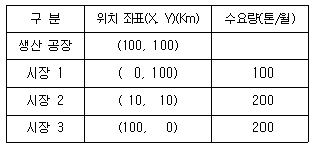
- (50, 50)
- (44, 24)
- (72, 62)
- (40, 40)
- (62, 52)
(정답률: 알수없음)
33. K사의 2006 년 5 월 물동량 예측치는 11,000 상자이었으나 실적치는 13,000 상자이었다. 2006 년 6 월의 물동량을 수요예측기법인 지수평활법을 사용하여 예측하면 얼마인가? (단, 지수평활계수 α = 0.2)
- 10,800 상자
- 11,400 상자
- 12,600 상자
- 13,000 상자
- 13,200 상자
(정답률: 알수없음)
34. 입체 자동화창고의 대표적인 운반기기 중에서 랙에 화물을 입출고하는 기기의 일종으로, 하단에 주행레일이 있고 상단에 가이드레일이 있는 통로 안에서 주행장치로 이동하며, 승강장치와 포크장치를 이용하여 입출고 작업을 하는 기기를 무엇이라고 하는가?
- 원격제어기
- 무인 반송차(AGV)
- 파렛트(Pallet)
- 컨베이어(Conveyer)
- 스태커 크레인(Stacker Crane)
(정답률: 알수없음)
35. 낱개 피킹시스템에서 작업자가 물건이 있는 장소로 직접 이동하는 작업자 이동형 시스템이 아닌 것은?
- Bin Shelving
- Storage Drawer
- Mobile Storage
- Carousel
- Person-Abroad AS/RS(Automated Storage/Re- trieval System)
(정답률: 알수없음)
36. 창고에 대한 설명으로 잘못된 것은?
- 창고는 물품의 감실 및 변질이 발생하지 않 도록 보관할 수 있는 장소이다.
- 수요와 공급의 조정을 원활히 하여 생산활동, 판매활동, 소비활동에 기여하는 시설이다.
- 창고는 물품의 감실 또는 손상을 방지하기위한 구축물/공작물을 시설한 토지 또는 수면에 물품을 보관하는 시설이다.
- 최근 물류시스템이 발전하고 소비자 중심의 물류가 중시되면서 창고의 유통기능보다 저장기능이 더욱 중시되는 추세이다.
- 제조업이나 도매업에서 소비지에 위치하고 있는 소규모 배송 거점을 배송센터라고 한다.
(정답률: 알수없음)
37. 상자 2 개에 부품을 보관하여 놓은 상태에서 어느 한 상자에서 계속 부품을 꺼내어 사용하다가 해당 상자의 부품을 모두 사용하고 나면 발주를 하여 부품이 모두 소진된 상자를 채우는 재고관리 기법은 무엇인가?
- 정기발주법
- 정량발주법
- 2중발주점 방식
- 인당발주점 방식
- Two-Bin법
(정답률: 알수없음)
38. 암(arm)을 이용하여 컨베이어가 흐르는 방향에 대해서 직각 방향으로 화물을 밀어내는 방식이며, 구조가 간단해서 어떤 컨베이어와도 연결이 용이한 분류 방식은 무엇인가?(오류 신고가 접수된 문제입니다. 반드시 정답과 해설을 확인하시기 바랍니다.)
- Pusher 방식
- Slide Shoe 방식
- Carrier 방식
- Pop-up Roller 방식
- Diverter 방식
(정답률: 알수없음)
39. 다음 중 포장방법을 기준으로 한 분류에 해당되지 않는 것은?
- 방수포장
- 압축포장
- 수출포장
- 완충포장
- 진공포장
(정답률: 알수없음)
40. 하역 합리화의 기본 및 보조 원칙에 대한 설명이다. 적절하지 않은 것은?
- 기계화의 원칙은 인력작업을 기계작업으로 대체하여 하역작업의 효율성과 경제성을 추구하는 원칙이다.
- 전산화의 원칙은 자재운반 및 보관활동 전반에 걸친 전산화 작업을 고려한다.
- 인터페이스의 원칙은 하역작업의 여러 공정 간의 계면 또는 접점이 원활히 연계되도록 하는 것을 뜻한다.
- 단순화의 원칙은 복잡한 시설과 관리체계를 단순화함으로써 작업의 이해와 인식을 용이하게 하고 효율을 향상시킬 수 있다.
- 표준화의 원칙은 하역 작업을 표준화하여 작업의 공정한 배분과 평가가 가능하도록 함으로써 하역작업의 효율성을 추구하는 원칙이다.
(정답률: 알수없음)
2과목: 물류관련법규
41. 화물유통촉진법상 용어정의에 대한 설명이다. 다음 중 옳지 않은 것은?
- "유통사업"이라 함은 타인의 수요에 응하여 유상으로 화물의 운송∙보관∙하역 또는 포장과 이와 관련된 제반활동을 영위하는 것을 업으로 하는 것을 말한다.
- "포장"이라 함은 화물의 운송ㆍ보관 또는 하역시 화물을 안전하게 보호하고 취급이 편리하도록 하기 위하여 용기등으로 화물의 외부를 싸는 것을 말한다.
- "물류시설"이라 함은 화물의 운송ㆍ보관 또는 하역등 화물의 유통을 위한 도로∙항만∙철도∙공항∙화물터미널 및 창고등을 말한다.
- "물류"라 함은 재화가 공급자로부터 수요자에게 전달될 때까지 이루어지는 운송∙보관∙하역∙포장과 이에 필요한 정보통신등의 경제활동을 말한다.
- "복합운송주선업"이라 함은 타인의 수요에 응하여 자기의 명의와 계산으로 타인의 선박∙항공기∙철도차량 또는 자동차등 2가지 이상의 운송수단을 이용하여 화물의 운송을 주선하는 사업을 말한다.
(정답률: 알수없음)
42. 화물유통촉진법상 국가물류기본계획과 도시물류기본계획의 수립단위로 옳은 것은?
- 10년 - 10년
- 20년 - 10년
- 5년 - 5년
- 5년 - 3년
- 3년 - 3년
(정답률: 알수없음)
43. 화물유통촉진법상 국가물류기본계획 및 도시물류기본계획에 대한 설명으로 다음 중 옳은 것은?
- 건설교통부장관은 국가물류기본계획의 타당성 여부를 3년마다 재검토할 수 있다.
- 도시물류기본계획은 건설교통부장관이 수립한다.
- 도시물류기본계획에는 도시물류체계의 개선목표와 단계별 추진계획이 포함되어야 한다.
- 국가물류기본계획은 건설교통부장관이 10년 단위로 수립하여야 한다.
- 특별시장 또는 광역시장은 도시물류기본계획을 수립하지 아니하고자 하는 경우에는 건설교통부장관에게 승인을 받아야 한다.
(정답률: 알수없음)
44. 화물유통촉진법상 복합운송주선업의 휴지 및 폐지에 대한 사항을 열거한 것이다. 다음 중 옳지 않은 것은?
- 복합운송주선업자가 사업의 전부 또는 일부를 휴지 또는 폐지하고자 하는 경우에는 미리 그 취지를 영업소 기타 일반공중이 보기 쉬운 곳에 게시하여야 한다.
- 복합운송주선업자인 법인이 합병외의 사유로 인하여 해산한 경우에는 그 청산인(해산이 파산에 의한 경우에는 파산관재인을 말한다)은 지체없이 이를 건설교통부장관에게 신고하여야 한다.
- 복합운송주선업자는 복합운송주선업의 전부 또는 일부를 휴지 또는 폐지하고자 하는 경우에는 미리 건설교통부장관에게 신고하여야 한다.
- 복합운송주선업의 휴지기간은 6월을 초과할 수 없다.
- 복합운송주선업자가 복합운송주선업의 전부를 폐지한 경우 그 사업을 폐지한 날로부터 2년이 경과하지 아니하면 복합운송주선업을 등록할 수 없다.
(정답률: 알수없음)
45. 화물유통촉진법상 물류표준화에 대한 사항을 열거한 것이다. 다음 중 옳지 않은 것은?
- 건설교통부장관은 물류표준의 보급을 촉진하기 위하여 필요한 경우에는 관계행정기관ㆍ정부투자기관ㆍ물류사업자 또는 물류에 관련된 장비의 사용자 및 제조업자에 대하여 물류표준에 적합한 장비를 제조ㆍ사용하게 하거나 포장을 하도록 요청하거나 권고할 수 있다.
- 물류표준화의 기준은 「산업표준화법」에 따른 한국산업표준에 의한다.
- 건설교통부장관은 물류표준화에 관한 업무를 효과적으로 추진하기 위하여 필요하다고 인정하는 경우에는 산업자원부장관에게 한국산업표준의 제정ㆍ개정 또는 폐지를 요청할 수 있다.
- 건설교통부장관은 물류표준화에 대한 업무를 추진하기 위하여 별도의 전문기관을 설치할 수 있다.
- 건설교통부장관은 물류회계의 표준화를 추진하기 위하여 물류사업자등에게 필요한 조치를 하도록 권고할 수 있다.
(정답률: 알수없음)
46. 화물유통촉진법상 국가 또는 지방자치단체는 인증종합물류업자가 물류와 관련된 사업을 수행하는 경우에는 소요자금의 일부를 융자하거나 부지의 확보를 위한 지원 등을 할 수 있다. 다음 중 이에 해당되지 않는 것은?
- 물류업무의 자동화 및 물류장비의 표준화
- 물류시설의 확충
- 첨단물류기술의 개발 및 적용
- 해외로부터 물류 관련 장비의 도입
- 해외시장의 개척
(정답률: 알수없음)
47. 화물유통촉진법상 전자문서 및 물류정보의 보안에 대한 설명이다. 다음 중 옳지 않은 것은?
- 누구든지 불법 또는 부당한 방법으로 전자문서 및 물류정보의 보안에 필요한 보호조치를 침해하거나 훼손하여서는 아니된다.
- 누구든지 물류전산망에 의하여 처리ㆍ보관 또는 전송되는 물류정보를 훼손하거나 그 비밀을 침해ㆍ도용 또는 누설하여서는 아니된다.
- 종합물류전산망을 구성ㆍ운영하는 자(전담사업자)는 전자문서 및 물류정보의 보안에 필요한 보호조치를 강구하여야 한다.
- 전담사업자는 전자문서 및 전자계산조직의 화일에 기록되어 있는 물류정보를 5년 동안 보관하여야 한다. 다만, 건설교통부장관의 승인을 얻은 경우에는 그러하지 아니하다.
- 누구든지 물류전산망에 의한 전자문서를 위작 또는 변작하거나 위작 또는 변작된 전자문서를 행사하여서는 아니된다.
(정답률: 알수없음)
48. 유통단지개발촉진법령상 유통단지에 설치하는 유통시설의 범위에 속하지 않는 것은?
- 공동집배송센터
- 농수산물도매시장
- 농수산물산지유통센타
- 화물터미널
- 보세창고
(정답률: 알수없음)
49. 다음 중 유통단지개발촉진법령상 유통단지개발사업에 해당되지 않는 것은?
- 도로∙철도∙궤도∙항만∙공항시설등의 건설사업
- 전기∙가스∙용수등의 수급시설과 전기통신설비의 건설사업
- 유통단지종사자의 주거공간 확보를 위한 주택지 조성사업
- 하수도∙폐기물 처리시설 기타 환경오염 방지시설등의 건설사업
- 공장∙가공시설 설치사업
(정답률: 알수없음)
50. 유통단지개발촉진법령상 유통단지개발종합계획 수립에 관한 다음 설명 중 틀린 것은?
- 유통단지개발종합계획은 건교부장관이 수립한다.
- 유통단지개발종합계획의 “경미한 사항을 변경하는 때”라 함은 유통시설용지면적의 100분의 20미만의 범위 안에서 유통용지수요ㆍ공급계획을 변경하는 때를 말한다.
- 유통단지개발종합계획을 수립하고자 할 때에는 관계중앙행정기관의 장으로부터 계획을 제출받아 작성한다.
- 관계중앙행정기관의 장은 필요한 경우 건설교통부장관에게 유통단지개발종합계획의 변경을 요청할 수 있다.
- 유통단지개발종합계획은 5년 단위로 수립한다.
(정답률: 알수없음)
51. 유통단지개발촉진법령상 유통단지의 원활한 개발을 위하여 국가 또는 지방자치단체가 지원하는 기반시설이 아닌 것은?
- 유통단지안의 산업시설
- 도로ㆍ철도 및 항만시설
- 하수도시설 및 폐기물처리시설
- 유통단지안의 공동구
- 집단에너지공급시설
(정답률: 알수없음)
52. 유통단지개발촉진법에 의해 개발되는 유통단지를 관리하기 위해 자율적으로 구성하는 협의회는?
- 유통단지운영협의회
- 운영관리협의회
- 유통산업발전협의회
- 입주기업체협의회
- 입주대표자협의회
(정답률: 알수없음)
53. 유통단지개발촉진법령상 유통단지 관리에 대한 다음 설명 중 틀린 것은?
- 관리기관은 유통단지안의 폐기물처리장ㆍ가로등 기타 공동시설의 설치ㆍ유지 및 보수를 위하여 필요한 때에는 입주기업체 및 지원기관으로부터 공동부담금을 받을 수 있다.
- 시ㆍ도지사는 유통단지의 관리에 관한 지침을 작성하여 관보에 고시하여야 한다.
- 입주기업체 또는 지원기관이 유통시설 또는 지원시설의 설치를 완료하기 전에 분양받은 토지ㆍ시설등을 처분하고자 할 때에는 시행자 또는 관리기관에게 양도하여야 한다.
- 관리기관은 유통단지관리계획을 수립하여 유통단지 지정권자에게 제출하여야 한다.
- 관리기관은 유통단지의 효율적인 관리를 위하여 입주기업체 및 지원기관으로부터 관리비를 징수할 수 있다.
(정답률: 알수없음)
54. 유통단지개발촉진법령상 유통단지로 지정고시된 토지안에서 행위제한 등에 관한 설명 중 틀린 것은?
- 유통단지안에서 건축물의 건축,대수선 또는 용도변경을 하고자 하는 자는 시장ㆍ군수 또는 구청장의 허가를 받아야 한다.
- 유통단지안에서 토지의 분할 행위를 하고자 하는 자는 시장ㆍ군수 또는 구청장의 허가를 받아야 한다.
- 죽목의 벌채 및 식재 행위를 하고자 하는 자는 시장ㆍ군수 또는 구청장의 허가를 받아야 한다.
- 시장ㆍ군수 또는 구청장은 토지의 형질변경 등에 관한 허가를 하고자 하는 경우로서 유통단지개발사업의 시행자가 지정된 경우에는 미리 그 시행자의 의견을 들어야 한다.
- 재해복구 또는 재난수습에 필요한 응급조치를 위하여 하는 행위를 하고자 하는 자는 시장ㆍ군수 또는 구청장의 허가를 받아야 한다.
(정답률: 알수없음)
55. 화물자동차운수사업법령상 운송주선사업자는 운송사업자 또는 운송가맹사업자와 화물운송계약을 체결한 때에는 화물 위ㆍ수탁증 등을 교부해야 한다. 다음 중 화물 위ㆍ수탁증 상의 의무적 기재사항이 아닌 것은?
- 위ㆍ수탁자의 성명 및 연락처
- 화주의 성명 및 연락처
- 화물의 종류 및 중량ㆍ부피 또는 수량
- 화물의 출발지 및 도착지
- 화물자동차운송주선사업 허가번호
(정답률: 알수없음)
56. 다음 중 화물자동차운수사업법령상 우수업체 인증대상 업종에 해당되지 않는 것은?
- 일반화물자동차운송사업
- 개별 및 용달화물자동차운송사업
- 일반화물을 취급하는 화물자동차운송주선사업
- 이사화물을 취급하는 화물자동차운송주선사업
- 화물자동차운송가맹사업
(정답률: 알수없음)
57. 다음 중 화물자동차운수사업법령상 화물자동차운송사업의 양도ㆍ양수에 관한 설명으로 옳지 않은 것은?
- 화물자동차운송사업 양도ㆍ양수 신고를 하고자 하는 경우에는 관련법령에 따라 양도인이 양도ㆍ양수 신고서를 관할 관청에 제출하여야 한다.
- 화물자동차운송사업의 양도ㆍ양수 신고 시에는 양도ㆍ양수계약서 사본, 차고지 설치확인서 등을 첨부하여야 한다.
- 화물자동차운송사업의 양도ㆍ양수 신고 시 양수인이 법인에 해당하나 운송사업자가 아닌 경우에는 담당 공무원이 「전자 정부 구현을 위한 행정업무 등의 전자화 촉진에 관한 법률」에 따라 행정정보의 공동이용을 통하여 법인등기부 등본을 확인하여야 한다.
- 화물자동차운송사업의 양도ㆍ양수 신고 시 제출하는 차고지 설치확인서는 양도ㆍ양수계약서 사본 등으로 차고지의 양도ㆍ양수가 확인되는 경우에는 제출하지 아니하여도 된다.
- 화물자동차운송사업의 양도ㆍ양수는 원칙적으로 당해 화물자동차운송사업의 전부를 그 대상으로 한다.
(정답률: 알수없음)
58. 다음 중 화물자동차운수사업법령상 화물자동차운송사업 허가를 취소하여야 하는 경우는?
- 화물운송종사자격이 없는 자로 하여금 화물을 운송하게 한 때
- 화물자동차운수사업법 제10조에 따른 화물운송사업자 준수사항을 위반한 때
- 부정한 방법으로 화물자동차운송사업 허가를 받은 때
- 부정한 방법으로 화물자동차운송사업 변경허가를 받은 때
- 정당한 사유 없이 화물자동차운수사업법 제12조에 따른 개선명령을 이행하지 아니한 때
(정답률: 알수없음)
59. 화물자동차운송사업자가 화물자동차운수사업법령상 화물자동차 사용의 정지를 목적으로 자동차등록증과 자동차등록번호판을 반납하여야 하는 경우가 아닌 것은?
- 화물자동차운송사업을 휴지 신고한 경우
- 화물자동차운송사업을 폐지 신고한 경우
- 화물자동차운송사업자가 허가취소 또는 사업정지처분을 받은 때
- 감차를 목적으로 허가사항을 변경한 때
- 화물자동차 대ㆍ폐차 신고를 하는 경우
(정답률: 알수없음)
60. 화물자동자운수사업법령상 화물운수사업의 운전업무종사 자격시험에 합격한 자는 소정의 교육을 받아야 한다. 다음 중 위 교육과목에 해당되지 않는 것은?
- 화물자동차운수사업법령 및 도로관계법령
- 여객자동차운수사업법령
- 교통안전에 관한 사항
- 화물 취급요령에 관한 사항
- 자동차응급처치방법
(정답률: 알수없음)
61. 다음은 화물자동차운수사업법령상 적재물배상보험 가입 등에 관한 설명이다. 옳지 않은 것은?
- 화물자동차운송사업자는 각 화물자동차별로 적재물배상보험 등에 가입하여야 한다.
- 화물자동차운송주선사업자는 각 사업자별로 적재물배상보험 등에 가입하여야 한다.
- 화물자동차운송사업자 또는 화물자동차운송주선사업자는 1사고당 각각 3천만원이상의 금액을 지급할 책임을 지는 적재물배상보험 등에 가입하여야 한다.
- 운송사업자의 화물자동차는 일반형ㆍ밴형 및 특수용도형 화물자동차와 견인형 특수자동차를 말한다.
- 건축폐기물ㆍ쓰레기 등 경제적 가치가 없는 화물을 운송하는 차량으로서 건설교통부장관이 정하여 고시하는 차량은 적재물배상보험 의무 가입 대상에서 제외된다.
(정답률: 알수없음)
62. 다음은 철도사업법령상 부가운임의 징수에 관한 설명이다. ( )안에 들어갈 내용 중 가장 알맞은 것은?
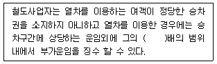
- 10
- 30
- 20
- 2
- 3
(정답률: 알수없음)
63. 철도사업법령상 철도사업의 휴지∙폐지에 관한 설명 중 틀린 것은?
- 철도사업자가 그 사업의 일부 또는 전부를 휴지 또는 폐지하고자 하는 때에는 건설교통부령이 정하는 바에 의하여 건설교통부장관에게 신고하여야 한다.
- 선로 또는 교량의 파괴 그 밖의 정당한 사유로 인한 사업휴지의 경우에는 건설교통부령이 정하는 바에 따라 건설교통부장관에게 신고하여야 한다.
- 철도사업자가 그 사업의 일부 또는 전부를 휴지 한 경우 휴지기간은 6월을 넘지 못한다. 다만, 교량의 파괴, 그 밖의 정당한 사유로 인한 사업휴지의 경우에는 그러하지 아니하다
- 휴지기간중이라도 휴지사유가 소멸된 경우에는 건설교통부장관에게 신고하고 사업을 재개할 수 있다.
- 철도사업자가 철도사업의 일부 또는 전부를 휴지 또는 폐지하고자 하는 때에는 대통령령이 정하는 바에 의하여 휴지 또는 폐지하는 사업의 내용과 그 기간 등을 관계역ㆍ영업소 및 사업소 등 공중이 보기 쉬운 곳에 게시하여야 한다.
(정답률: 알수없음)
64. 철도사업법령상 공동사용시설을 관리하는 자가 철도사업자와 협정을 체결하여 공동 이용할 수 있도록 하는 철도시설이 아닌 것은?
- 여객수송을 위한 철도차량
- 철도역 및 역시설(물류시설ㆍ환승시설 및 편의시설 등을 포함한다)
- 철도차량의 정비ㆍ검사ㆍ점검ㆍ보관 등 유지관리를 위한 시설
- 사고복구 및 구조ㆍ피난을 위한 설비
- 열차의 조성 또는 분리 등을 위한 시설
(정답률: 알수없음)
65. 철도사업법령상 점용허가에 관한 설명으로 적당하지 않은 것은?
- 철골조ㆍ철근콘크리트조ㆍ석조 또는 이와 유사한 견고한 건물의 축조를 목적으로 하는 경우 점용허가기간은 30년을 초과하여서는 아니된다.
- 점용허가를 받은 자는 건설교통부장관에게 점용료를 납부하여야 한다.
- 점용허가로 인하여 발생한 권리와 의무를 이전하고자 할 때에는 건설교통부장관의 인가를 받아야 한다.
- 건물 외의 공작물의 축조를 목적으로 하는 경우 점용허가기간은 10년을 초과하여서는 아니된다.
- 건설교통부장관은 국가가 소유ㆍ관리하는 철도시설에 건물을 설치하고자 하는 자에게 국유재산법의 규정에 불구하고 점용허가를 할 수 있다.
(정답률: 알수없음)
66. 철도사업법령상 운임ㆍ요금에 대한 설명으로 적당하지 않은 것은?
- 철도사업자는 운임ㆍ요금을 정하거나 변경함에 있어서 건설교통부장관이 지정ㆍ고시한 운임ㆍ요금의 상한을 초과하여서는 아니된다.
- 철도사업자는 운임ㆍ요금을 건설교통부장관에게 신고하여야 한다.
- 철도사업자는 사업용철도를 도시철도법에 의한 도시철도사업자가 운영하는 도시철도와 연결하여 운행하고자 하는 때에는 철도운임ㆍ요금의 신고 또는 변경신고를 하기 전에 철도의 운임ㆍ요금 및 그 변경시기에 관하여 미리 당해 도시철도사업자와 협의하여야 한다.
- 철도사업자는 신고 또는 변경신고를 한 운임ㆍ요금을 그 시행 1개월 이전에 관계역ㆍ영업소 및 사업소 등 공중이 보기 쉬운 곳에 게시하여야 한다.
- 건설교통부장관은 철도운임ㆍ요금의 상한을 지정함에 있어 철도운임ㆍ요금심의위원회를 설치하여 그 의견을 들을 수 있다.
(정답률: 알수없음)
67. 철도사업법령상 철도사업약관에 기재하여야 할 사항에 해당되지 않는 것은?
- 철도운임ㆍ요금의 수수 또는 환급에 관한 사항
- 화물의 인도ㆍ인수ㆍ보관 및 취급에 관한 사항
- 운송책임 및 배상에 관한 사항
- 철도서비스 품질평가에 관한 사항
- 여객의 금지행위에 관한 사항
(정답률: 알수없음)
68. 철도사업법령상 철도서비스 품질평가에 대한 설명으로 적당하지 않은 것은?
- 건설교통부장관은 철도서비스의 품질을 평가한 때에는 그 평가결과를 신문 등 대중매체를 통하여 공표하여야 하고, 사업개선명령 등 필요한 조치를 할 수 있다.
- 철도서비스의 품질평가결과를 공표하는 경우에는 평가지표별 평가결과, 철도서비스의 품질 향상도, 철도사업자별 평가순위 등을 포함하여야 한다.
- 철도사업자에 대한 철도서비스의 품질평가는 매년마다 실시하여야 한다.
- 건설교통부장관이 필요하다고 인정하는 경우에는 수시로 품질평가를 실시할 수 있다.
- 품질평가를 하고자 하는 경우 품질평가를 개시하는 날 2주 전까지 철도사업자에게 품질평가실시계획, 품질평가의 기간 등을 통보하여야 한다.
(정답률: 알수없음)
69. 유통산업발전법상 유통산업발전 기본계획과 시행계획에 대한 설명 중 틀린 것은?
- 산업자원부장관은 유통산업의 발전을 위하여 3년마다 유통산업발전 기본계획을 관계중앙행정기관의 장과의 협의를 거쳐 세우고 이를 시행하여야 한다.
- 산업자원부장관은 기본계획 및 시행계획을 특별시장ㆍ광역시장 또는 도지사에게 알려야 한다.
- 산업자원부장관은 기본계획에 따라 매년 유통산업발전 시행계획을 관계중앙행정기관의 장과의 협의를 거쳐 세워야 한다.
- 산업자원부장관은 기본계획 및 시행계획을 세우기 위하여 필요하다고 인정되는 경우에는 관계중앙행정기관의 장에게 필요한 자료를 요청할 수 있다.
- 산업자원부장관 및 관계중앙행정기관의 장은 시행계획 중 소관사항을 시행하고 이에 필요한 재원을 확보하는데 노력하여야 한다.
(정답률: 알수없음)
70. 다음 시장과 매장 중에 유통산업발전법의 적용을 받는 것은?
- 대형마트의 농수산물소매매장
- 농수산물도매시장
- 민영농수산물도매시장
- 농수산물종합유통센터
- 축산법 제27조의 규정에 의한 가축시장
(정답률: 알수없음)
71. 유통산업발전법상 대규모점포의 개설등록을 설명한 것 중 맞는 것은?
- 대규모점포를 개설하고자 하는 자는 영업을 개시하기 전에 산업자원부장관에게 등록하여야 한다.
- 대규모점포를 개설하고자 하는 자는 영업을 개시하기 전에 산업자원부장관에게 신고하여야 한다.
- 대규모점포를 개설하고자 하는 자는 영업을 개시하기 전에 시장ㆍ군수ㆍ구청장(자치구의 구청장을 말한다)에게 등록하여야 한다.
- 대규모점포의 등록한 내용을 변경하고자 하는 경우에 산업자원부장관에게 신고하여야 한다.
- 법인의 명칭ㆍ대표자의 성명ㆍ소재지 등의 변경사항이 있는 경우에 대규모점포개설 변경은 변경일로부터 20일 이내에 신고하여야 한다.
(정답률: 알수없음)
72. 유통산업발전법상 공동집배송센터개발촉진지구의 지정요건 중 부지면적 요건에 해당하는 것은?
- 50,000 m2 이상일 것
- 60,000 m2 이상일 것
- 70,000 m2 이상일 것
- 80,000 m2 이상일 것
- 100,000 m2 이상일 것
(정답률: 알수없음)
73. 유통산업발전법령에서 규정하고 있는 다음의 체인사업은 어떠한 유형의 체인사업에 대한 설명인가?
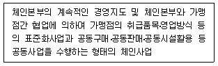
- 프랜차이즈형 체인사업
- 직영점형 체인사업
- 임의가맹점형 체인사업
- 전문점형 체인사업
- 조합형 체인사업
(정답률: 알수없음)
74. 유통산업발전법령상 대규모 점포의 종류가 아닌 것은?
- 대형마트
- 전문점
- 임시시장
- 백화점
- 쇼핑센터
(정답률: 알수없음)
75. 유통산업발전법령상 유통산업시책의 기본방향에 대한 설명 중 틀린 것은?
- 유통산업에 있어서 소비자 편익의 증진
- 유통산업의 지역별 균형발전의 도모
- 유통산업의 종류별 균형발전의 도모
- 유통산업의 국제경쟁력 제고
- 유통산업의 지역경쟁력 제고
(정답률: 알수없음)
76. 다음 중 항만운송사업법령상 검수사업의 등록기준 중 1급지 항만에 해당하는 항만은?
- 마산항
- 포항항
- 군산항
- 목포항
- 동해항
(정답률: 알수없음)
77. 다음 중 항만운송사업법령상 항만용역업의 사업내용에 속하는 사업은?
- 선박운항에 필요한 물품 및 주ㆍ부식의 공급과 선박의 침구류 등을 세탁하는 사업
- 선박용 연료유를 공급하는 사업
- 컨테이너를 수리하는 사업
- 선박에서 사용하는 맑은 물을 공급하는 사업
- 선박화물을 적하 또는 양하하는 경우에 그 화물의 개수의 계산 또는 인도ㆍ인수의 증명을 행하는 일
(정답률: 알수없음)
78. 다음 중 항만운송사업법령상 항만운송에서 제외되는 운송을 열거한 것이다. 틀린 것은?
- 선박에서 사용하는 물품의 공급을 위한 운송
- 선박에서 발생하는 분뇨 및 폐물의 운송
- 어획물 운반선(어업장으로부터 양륙지까지 어획물 또는 그 제품을 운반하는 선박을 말한다)에 의하여 행하는 운송
- 탱커선에 의하여 행하는 운송
- 하주 또는 선박운항업자의 위탁을 받고 선박에 의하여 운송된 화물을 항만안에서 선박으로부터 인수 또는 하주에게 인도하는 행위
(정답률: 알수없음)
79. 다음은 농수산물유통 및 가격안정에 관한 법률상 도매시장법인이 될 수 있는 자격요건 중 일부이다. ( )안에 들어갈 내용이 순서대로 올바르게 연결된 것은?
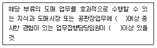
- 1년 - 1인
- 2년 - 2인
- 3년 - 3인
- 2년 - 1인
- 3년 - 2인
(정답률: 알수없음)
80. 농수산물유통 및 가격안정에 관한 법령상 산지 유통인에 대한 다음 설명 중 틀린 것은?
- 도매시장의 개설자는 산지유통인 허가신청이 있는 때에는 허가요건을 심사하여 적정수의 산지유통인을 두어야 한다.
- 국가 또는 지방자치단체는 산지유통인의 공정한 거래를 촉진하기 위하여 필요한 지원을 할 수 있다.
- 도매시장법인의 주주 또는 임ㆍ직원은 당해 도매시장에서 산지유통인의 업무를 하여서는 아니된다.
- 중도매인의 주주 또는 임ㆍ직원은 당해 도매시장에서 산지유통인의 업무를 하여서는 아니된다.
- 산지유통인이 등록된 도매시장에서 출하업무외의 판매ㆍ매수 또는 중개 업무를 행한 경우 1년이하의 징역 또는 1천만원이하의 벌금에 처한다.
(정답률: 알수없음)